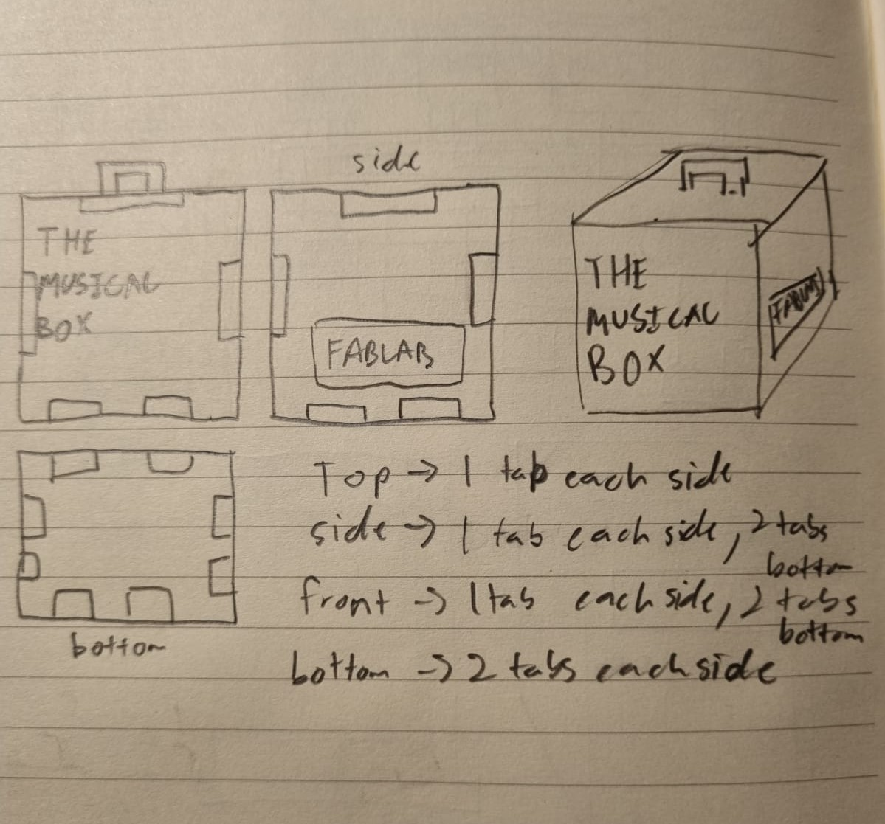
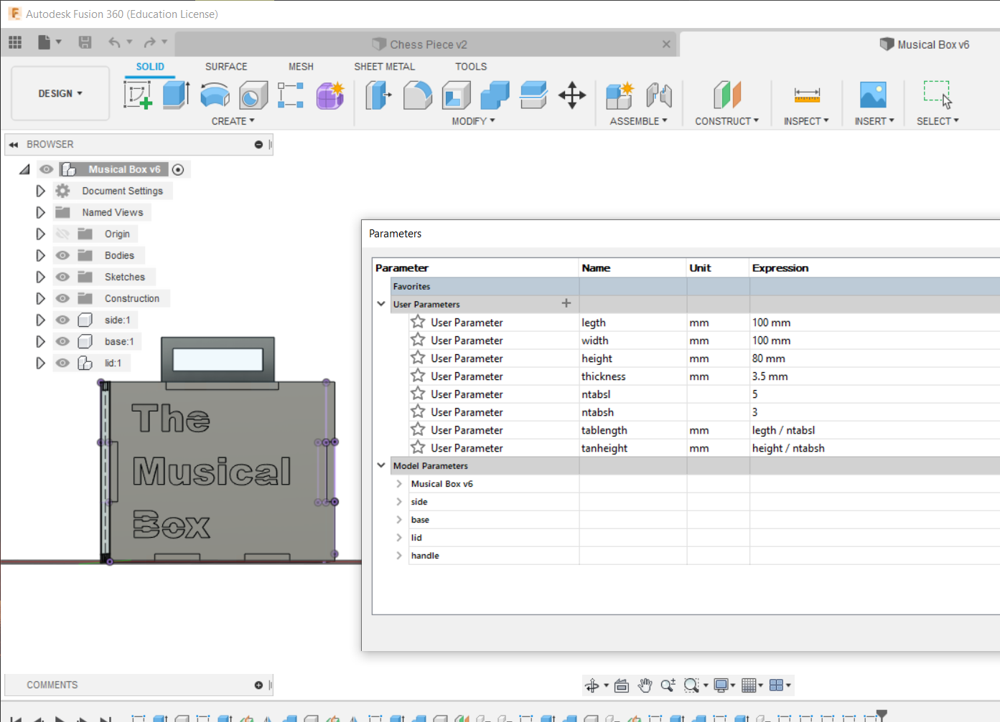
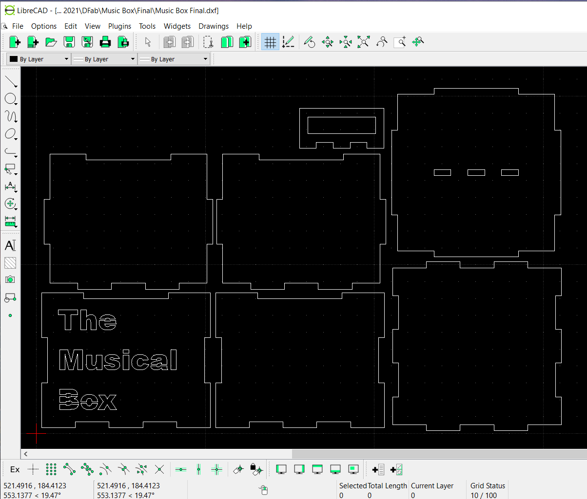
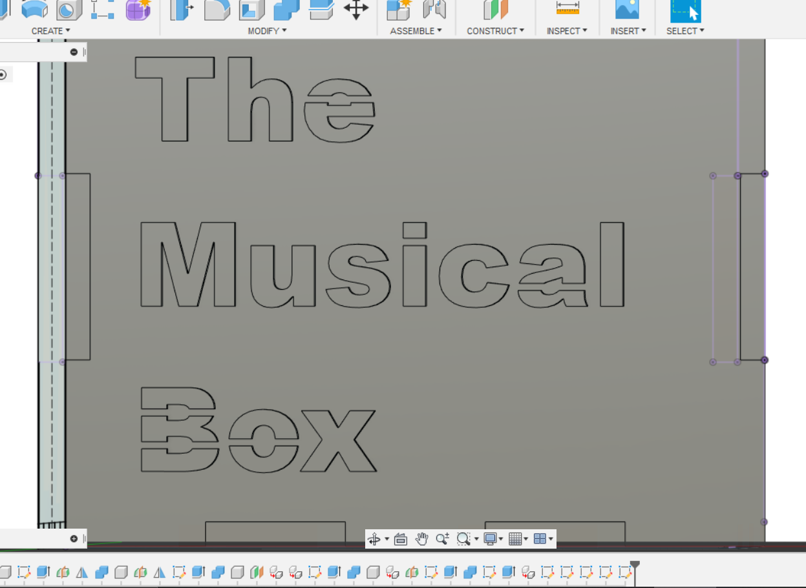
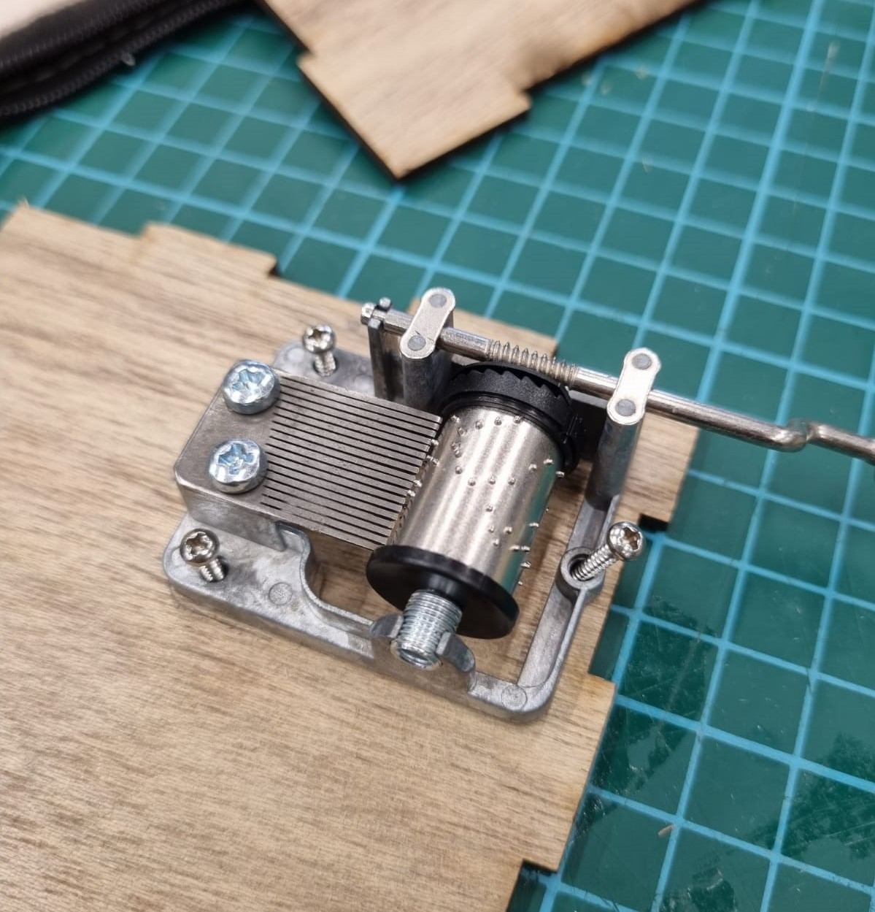
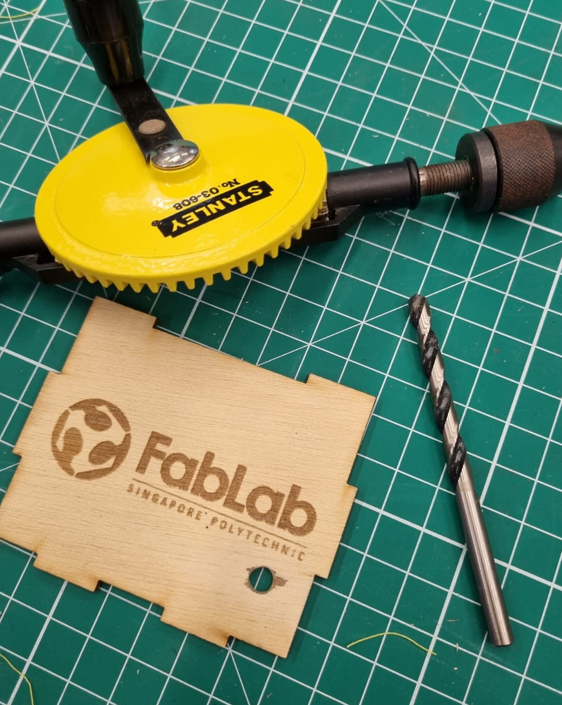
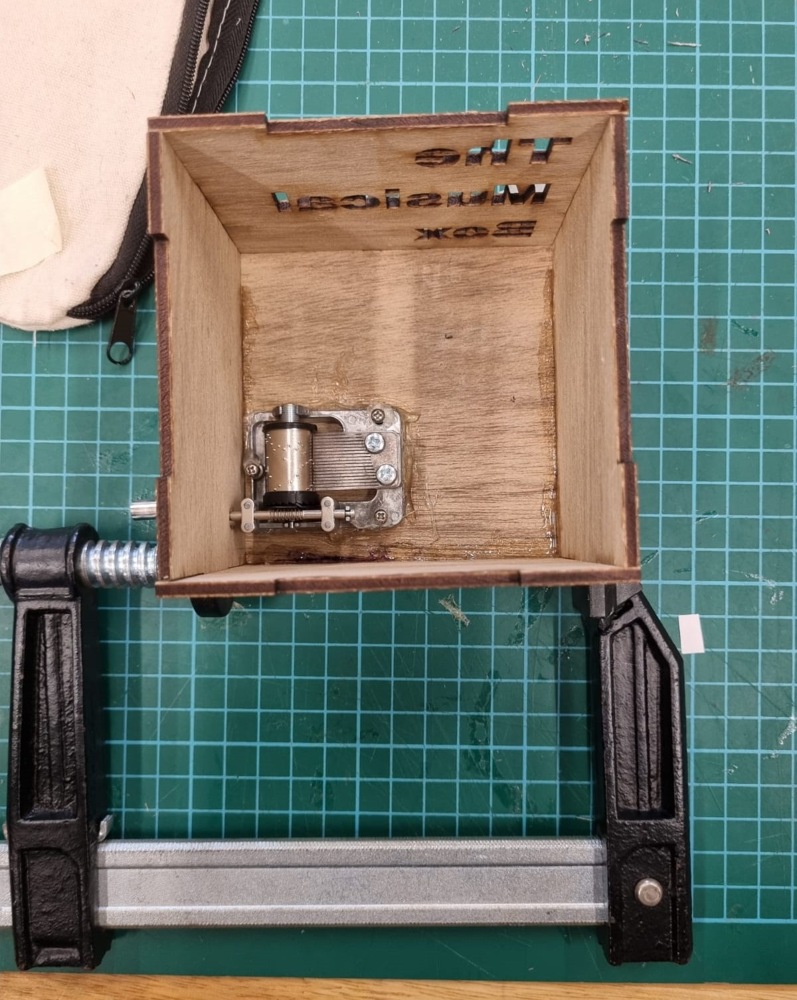

On this page I will bring you along my journey in this project of making a musical box! From step 1 of drafting the box on Fusion 360 to the last step of fitting the musical component into the case.
First off, before I started anything, I sketched out how I wanted to bulid my musical box! Keeping in mind the number of tabs and how I wanted my design to look like, here is my sketch:
Next, I drafted my music box on Fusion 360, here I utilised the usage of tabs to ensure that the pieces are able to fit together during assembly. Additionally I used parametric dimensions so that if a measurement needs changing it can be done easily in one step! After which I export the drawing in a DXF file and send to the machine for cutting! Below are images of my parametric design and my DXF file!
 Additionally in my design I incoperated the usage of causeways on my box text to ensure that parts of certain letters dont drop off after laser sutting.
Next up, I sent my DXF into the laser cutting machine to produce my cut. All I need to do precut is to set the required settings and my cut is produced! Below is a photo of my cut!

Here is the laser cutting settings I used before cutting:
Lastly, I fitted the music component into the box by screwing it into the base. Addtionally, I hotglued the music component onto the base to ensure that it sits perfectly at its desired location. This is also to ensure that it does not move when shaken. Next up, I used a hand drill to drill a hole for the crank of the music component to petrude out, allowing the user to play the music. Last but not least I glued all the components together and used g-clamps to ensure they stuck well to each other without falling apart.
  Click here to return back to projects!!